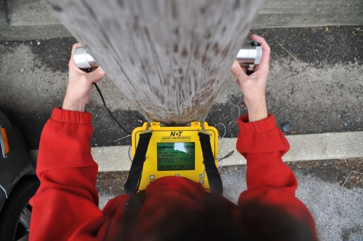

Products & Services
NorthTech stands synonymous with Innovation, Quality and Reliability
Construction
Northtech Engineering havs a global Building, Construction and Engineering team who help shape
the industry by providing unrivalled first class service to our clients and candidates. Our team
is made up of a talented group of consultants who have a blend of industry and recruitment
experience making them true specialists in their fields. We are passionate about what we do;
we are creative, driven and fabulously well connected.
We act for a diverse range of clients, which includes Developers, Property Occupiers, Consultancies
and Contractors. Our clients know that when they engage us we are fully committed to finding them
the perfect candidate. We will provide a first class and innovative service ensuring that our clients
are connected with the best candidates available in the market place. It is this close working relationship
that affords us an unrivalled level of global knowledge and experience not offered anywhere else.
Admixtures / Construction Chemicals
Chemical admixtures are the ingredients in concrete other than portland cement, water, and
aggregate that are added to the mix immediately before or during mixing. Producers use admixtures
primarily to reduce the cost of concrete construction; to modify the properties of hardened
concrete; to ensure the quality of concrete during mixing, transporting, placing, and curing;
and to overcome certain emergencies during concrete operations.
Admixtures play a vital role
in production of quality concrete and mortars in all segments of the industry – Ready-mix,
Precast and Site-batch. It is the ingredients in concrete other than cement, water and aggregate
that is added to the mix immediately before or during mixing. Used primarily to reduce the cost
of concrete construction; to modify the properties of hardened concrete; to ensure the quality
of concrete during mixing, transporting, placing, and curing; and to overcome certain emergencies
during concrete operations.
Types of Admixtures
- Plasticizers / Water Reducing Agents (WRA’s)
- Super plasticizers
- Air Entrainers
- Retarders
- Accelerators
- Pumping Aids
- Specialty Admixtures
Grouts & Anchors
Cement and Epoxy resin grouts for construction applications including grouting baseplates, machine bases, rails and all sorts of voids in new construction and repair work. With exceptional flow, stability and strength characteristics, our grouts provide the best solution for high precision and critical applications, together with a wide range of cement and resin based anchoring systems. The range of grouts and anchors is tested and outperforms industry laid norms and standards. Utilizing our extensive range of products, combined with the expert knowledge and experience of our people, We strives to deliver an innovative and value-driven solution. Always in constant consultation with our customers, We develop a tailored solution for any construction project, adding value and becoming more than just a materials supplier. By utilising global experience and expertise, Grout and anchor solutions deliver some of the world’s most innovative product range.
Advantages
- Cost effective, project specific solutions
- Extensive product portfolio
- Proven technologies ensuring long term performance
- Easily applied systems
- CAD details/specification assistance
- Expert technical advice and customer services
Waterproofing

Waterproofing is required for
- Basement of structure
- Walls
- Bathrooms and kitchen
- Balconies, decks
- Terrace or roofs
- Green roofs
- Water tanks
- Swimming pools
Waterproofing Methods
- Cementitious Waterproofing
- Liquid Waterproofing Membrane
- Bituminous Membrane
- Bituminous Coating
Advantages
- Rapid installation - no blinding concrete or protection required.
- Assured watertight integrity even in the event of ground settlement.
- No water-tracking.
- Easy jointing and compatible full range of ancillaries.
- Long term watertight durability.
- Integrity assured at pile caps.
- Excellent solution for precast concrete.
- Water tanks
- Protects structure against ground contaminants.
BELOW-GROUND WATERPROOFING
We offer one of the most comprehensive ranges in below-ground waterproofing, providing leak-free buildings around the world. These systems are manufactured to the highest quality standards backed by independent test certificates. For below-ground structures where the exterior face of the structural concrete is inaccessible, the waterproofing must be applied prior to pouring the concrete. Conventional systems are either loose-laid or self-adhering to the substrate not the structural concrete, this means there is no seal between the waterproofing and the structural concrete which can lead to water travelling between the waterproofing and the structure from any leakages that may occur. BS8102:2009 highlights this problem and recommends that a fully-bonded pre-applied waterproofing system be used to mitigate this risk. A similar problem occurs where ground settlement takes place.
ABOVE-GROUND WATERPROOFING
Cool roofs, as the name implies, are roofs that heat up very little, thanks to their high capacity to reflect solar radiation and, at the same time, to emit infrared heat energy. They can be an effective solution to the problem of overheating that afflicts individual buildings and urban areas in the summer, mitigating the heat island effect. Synthetic membrane, reduces the roof’s surface temperature thanks to its reflectance and remittance. The same effect can be achieved by applying seamless coating. Flat/sloping roofs that are trafficked can be easily waterproofed by using either a spray or liquid-applied membrane to give seamless protection and rapid return to service times.
WET AREAS
Areas within a building that are supplied with water from its water supply system are vulnerable to potential leakages and subsequent damaged to its structure and interior finishes. These critical applications can be dealt with by using a wide variety of waterproofing products supplied by Northtech, ensuring piece of mind for long term durability and comfort. We offers a full range of wet area waterproofing product systems, manufactured to the highest quality standards backed by independent test certificates.
WATER INDUSTRY
Todays water industry operates sophisticated and costly networks including clean water treatment works and sewage plants, usually run as a public service by a public utility which is owned by local or national government. In some countries, the water industry is regulated with products undergoing extensive approvals certification especially when in contact with potable water. We have many solutions to protect and seal clean and dirty water structures, these systems have proven track records and are widely known for their high quality.
Industrial / Residential Flooring
Industrial
We provide the complete industrial flooring solutions to match the needs of our clients. Whether you require chemical resistance, abrasion resistance, resistance to heavy loads, ease of maintenance or all of the above, we will be able to provide a satisfying solution for you. Our vast portfolio of performance flooring products offer the strength required to deal with an entire host of conditions whether it is industrial coatings and joint-free self-levelling epoxies through to heavy duty polyurethanes and epoxy mortar systems. All our industrial floor coating systems are joint-free, delivering a seamless finish with no cracks or crevices to harbor dust, dirt and bacteria. This makes the surfaces user-friendly to clean and maintain and ensures hygiene between wash cycles.
Epoxy 3D Floor
The 3D technology is gaining increasing popularity. Epoxy 3D floor has been used more and more in shopping malls, halls, offices, homes and apartments due to its creativity and high performance. This is the latest fad in the fancy floor world. Epoxy 3D floor installation process involves laying down a layer of self-leveling primer followed by the desired image. This is then treated with a transparent two-component epoxy or polyurethane to give the perfect image depth. A level of protective varnish is the final step. Not like a sticker or painted vinyl that is directly under your feet, the installed epoxy 3D floor gives the perception of depth and is impervious to all sorts of damage that would usually affect floor decorations.
Structural Repairs & Retrofitting
Northtech Engineering is one of the leading specialist contractor undertaking repair, strengthening, refurbishment and general contracting of civil engineering structures and buildings throughout the country. They successfully completed numerous projects of structural repairs, strengthening, water-proofing and protection in the residential, commercial, industrial and infrastructure space of the industry. The group can be relied on creativity, quality and dependability to deliver the project on time, within budget and with minimal disruption of operations.
Techniques for Strengthening
Primary aim of strengthening a structure is to increase its load bearing capacity with respect to its previous condition. Only those aspects related to flexure are discussed here. Established techniques which have been in use successfully for a number of years are recognized as follows:
- Over Slabbing
- Sprayed Concrete with Additional Reinforcement
- Steel Plate bonding
- External Pre stressing
- Foundation Repairs
Pre-Fabricated Structures
Prefabrication is the method of construction which includes assembling components of a structure in a manufacturing or production site, transporting complete assemblies or partial assemblies to the site where the structure is to be located. It is combination of good design with modern high performance components and quality controlled manufacturing procedures. This work is carried out in two stages, manufacturing of components in a place other than final location and their erection in position. Prefabricated sections are produced in large quantities in a factory and then shipped to various construction sites. This procedure may allow work to continue despite poor weather conditions and should reduce any waste in time and material at the site. Precast concrete units are cast and hardened before being used for construction. Sometimes builders cast components at the building site and hoist them into place after they harden. This technique permits the speedy erection of structures.
Prefabrication stages:
- Manufacturing at factory condition
- Erection of components at the required location
Pre Engineered Structures (PEB)
In structural engineering, a pre-engineered building (PEB) is designed by a PEB supplier or PEB manufacturer, to be fabricated using best suited inventory of raw materials available from all sources and manufacturing methods that can efficiently satisfy a wide range of structural and aesthetic design requirements. Within some geographic industry sectors these buildings are also called Pre-Engineered Metal Buildings (PEMB) or, as is becoming increasingly common due to the reduced amount of pre-engineering involved in custom computer-aided designs, simply Engineered Metal Buildings (EMB). During the 1960s, standardized engineering designs for buildings were first marketed as PEBs. Historically, the primary framing structure of a pre-engineered building is an assembly of I-shaped members, often referred as I-beams. In pre-engineered buildings, the I beams used are usually formed by welding together steel plates to form the I section. The I beams are then field-assembled (e.g. bolted connections) to form the entire frame of the pre-engineered building. Some manufacturers taper the framing members (varying in web depth) according to the local loading effects. Larger plate dimensions are used in areas of higher load effects. Other forms of primary framing can include trusses, mill sections rather than three-plate welded, castellated beams, etc. The choice of economic form can vary depending on factors such as local capabilities (e.g. manufacturing, transportation, construction) and variations in material vs. labour costs. Typically, primary frames are 2D type frames (i.e. may be analyzed using two-dimensional techniques). Advances in computer-aided design technology, materials and manufacturing capabilities have assisted a growth in alternate forms of pre-engineered building such as the tension fabric building and more sophisticated analysis (e.g. three-dimensional) as is required by some building codes. Cold formed Z- and C-shaped members may be used as secondary structural elements to fasten and support the external cladding. Roll-formed profiled steel sheet, wood, tensioned fabric, precast concrete, masonry block, glass curtainwall or other materials may be used for the external cladding of the building. In order to accurately design a pre-engineered building, engineers consider the clear span between bearing points, bay spacing, roof slope, live loads, dead loads, collateral loads, wind uplift, deflection criteria, internal crane system and maximum practical size and weight of fabricated members. Historically, pre-engineered building manufacturers have developed pre-calculated tables for different structural elements in order to allow designers to select the most efficient I beams size for their projects. However, the table selection procedures are becoming rare with the evolution in computer-aided custom designs. While pre-engineered buildings can be adapted to suit a wide variety of structural applications, the greatest economy will be realized when utilising standard details. An efficiently designed pre-engineered building can be lighter than the conventional steel buildings by up to 30%. Lighter weight equates to less steel and a potential price savings in structural framework.
Material Testing
At Northtech we will be committed to provide our customers with the material testing equipments other than testing facility ranging in the following fields.
- Soil testing
- Rock testing
- Soil Aggregate and Filler testing
- Concrete
- Cement/Mortar
- Bitumen/Asphalt
- Material testing
- Hydraulic Lab testing
- General Laboratory testing
Construction Equipments
- Pavers
- Batch Mix Plants
- Portable Batch Mix Plant
- Transit Mixer
- Excavators
- Backhoe Loaders
- Bulldozers
- Motor Graders
- Crawler Loaders
- Trenchers
- Scrapers
- Common Dump Trucks
Non Destructive Testing (NDT)
Rebound Hammer Test
Conducting rebound hammer test as per IS 13311(Part-2), ASTM C 805. The rebound hammer test shall be conducted at all those points were UPV test has been performed. One point consisting of six readings spread over an area of 1 sq. Shall be considered as 1 test.
Ultra-Sonic Pulse Velocity Test
Conducting Ultra-Sonic Pulse velocity (UPV) test at selected location on RCC members of the Structures covered under the study by making 300 mm x300mm c/c grids to know about the homogeneity and quality of concrete. The test shall be performed as p0er IS 13311 (Part-1) / ASTM C 597.
Core extraction and testing
Extracting the concrete core samples of minimum 65 mm diameter and 100-150 mm length (approx.) at select location form RCC members of the structures covered under the study and evaluation the properties in the laboratory from the core samples selected. IS 456:2000;IS 516:1959;IS 1199:2002; ASTM C-42.
Cut AND Pull Out (CAPO) Test
As per ASTM C-900
Half – Cell / Surface Potential Test
Measuring the half-cell /surface potential at select location on RCC members of the structures covered under the study to understand the extent of reinforcement corrosion as per ASTM C 876.
Ferro Scanning Test
At select location on RCC members of the structures covered under the study to see the adequacy of concrete cover to rebars and effect of carbonation.
Carbonation Test
Measurement of carbonation depth by phenolphthalein spray test at select location on RCC members of the structures covered under the study to see the depth of carbonation.
Moisture Test by Moisture Meter
Moisture profiling of concrete with respect to depth.
Chemical Analysis
Chemical analysis of chlorides, Sulphates, pH, alkali silica, etc on concrete powder collected from the structures, covered under the study, by drilling to understand the chemical deterioration / degradation of concrete and its effect on reinforcement corrosion.


Survey Equipments and Power Tools
- Half theodolite
- Plain theodolite
- Simple theodolite
- Great theodolite
- Non-transit theodolite
- Transit theodolite
- Seconds theodolite
- Electronic theodolite
- Mining theodolite
- Suspension theodolite
- Traveling theodolite
- Pibal theodolite
- Registering theodolite
- Gyro-theodolite
- Construction theodolite
- Photo-theodolite
- Robotic theodolite
- Vernier theodolite
- Tachymeter (surveying)
- Graphometer
- Universal instrument (surveying)
- Transit (surveying)
- Total station
- Alidade
- Alidade table
- Plane table
- Dumpy level
- Tape (surveying)
- Measuring tape
- Knitting machine
- Lathe
- Lawn mower
- Leaf blower
- Surveyor's chain
- Engineer's chain
- Ramsden surveying instruments
- Ranging rod
- Air compressor
- Alligator shear
- Angle grinder
- Belt sander
- Biscuit joiner
- Ceramic tile cutter
- Chainsaw
- Circular saw
- Concrete saw
- Cold saw
- Crusher
- Core Cutter
- Diamond blade
- Diamond tool
- Disc cutter
- Disc sander
- Drill
- Floor sander
- Food processor
- Grinding machine
- Heat gun
- Hedge trimmer
- Impact driver
- Impact wrench
- Jackhammer
- Jointer
- Jigsaw
- Miter saw
- Multi-tool
- Needlegun scaler
- Pneumatic torque wrench
- Nail gun (electric and battery as well as powder actuated)
- Powder-actuated tools
- Power wrench
- Pressure washer
- Radial arm saw
- Random orbital sander
- Reciprocating saw
- Rotary saw
- Rotary tool
- Rotary tiller
- Sabre saw
- Sander
- Scrollsaw
- Sewing machine
- Snow blower
- Steel cut off saw
- String trimmer
- Table saw
- Thickness planer
Architectural / Structural Consulting
Our clients benefit from our in-depth regional and local knowledge combined with deep experience in architectural design standards and international best practice. Our team members are the professional qualified has designed and managed projects that vary from small private houses to large residential and commercial development projects. Our concept team will understand the client’s specific requirements and needs and then transform them into space efficient and well-organized floor plans and 3d models and will then detail these drawings incorporating Mechanical Electrical Plumbing systems and structural design to present the client with highly comprehensive architectural drawings.
Structural Modeling & Analysis
- 3-D Structural Modeling
- Finite Element Modeling
- Static & P-Delta Analysis
- Dynamic Analysis
- Non Linear Analysis
- Pushover Analysis
Structural Design & Proof Consultancy
- Reinforced Concrete Design
- Pre-stressed Concrete Design
- Post-tensioned Concrete Design
- Hot Rolled Steel Design
- Cold Formed Steel Design
- Connection Design
- Wood Design
- Timber Design
- Masonry structures (for Residential and Commercial)
- Insulated Concrete Form (ICF)
- Concrete Tilt Wall
- Structural Forensics
- Peer Review
Seismic engineering
- Structural Rehabilitation
- Seismic Risk Assessment
- Seismic Retrofitting
Geographic Information Science (GIS) Solutions

- Utility Mapping Service
- Topographic Mapping
- Thematic Mapping
- Parcel Mapping
- Geological Mapping
- Contour Mapping
- Cartographic Mapping